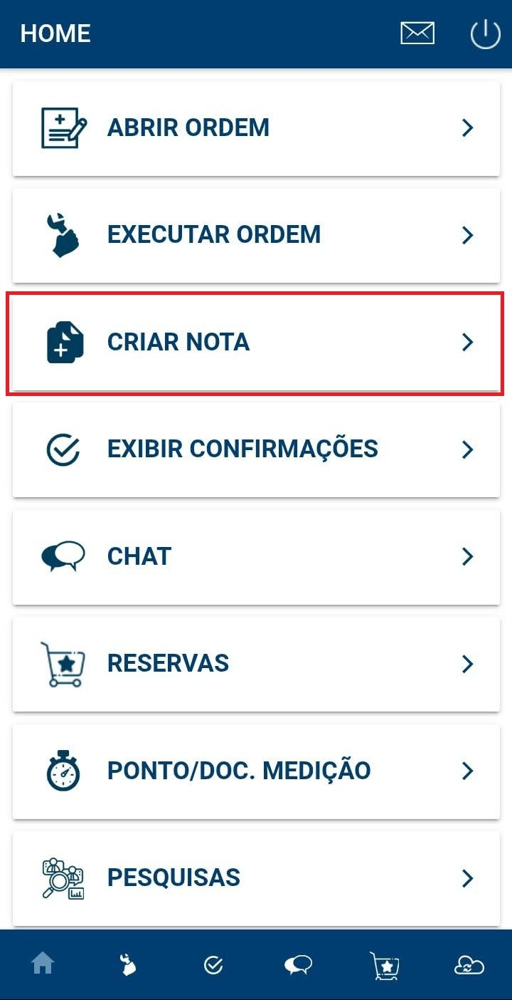
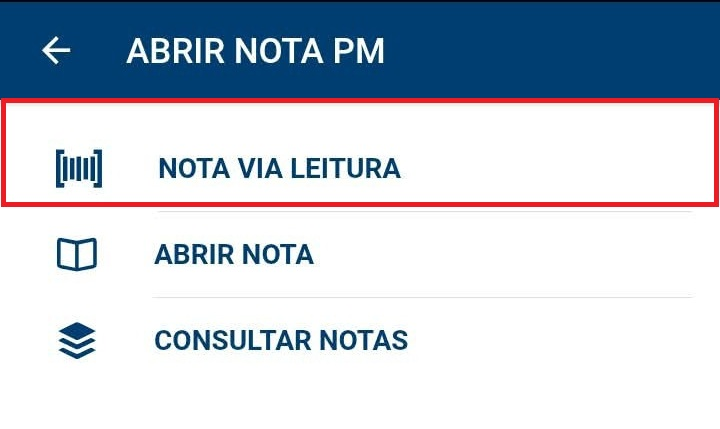
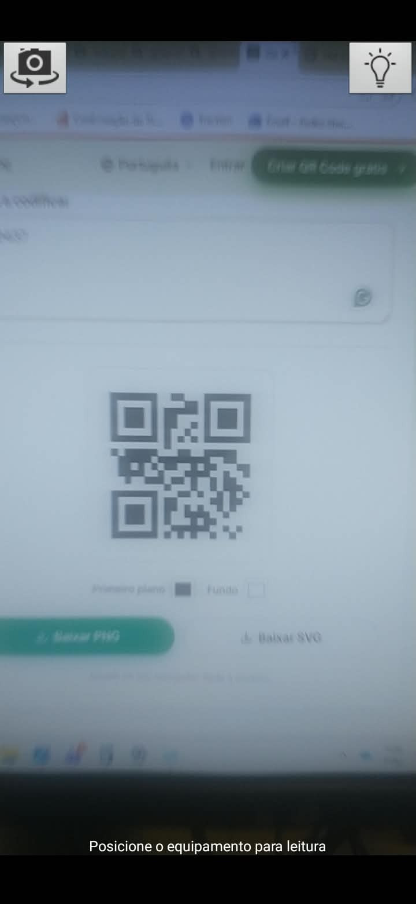
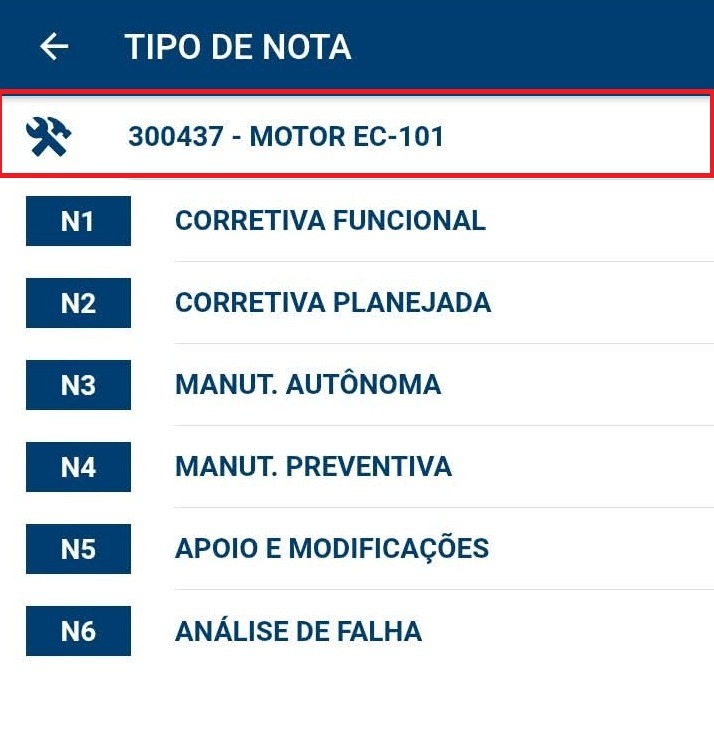
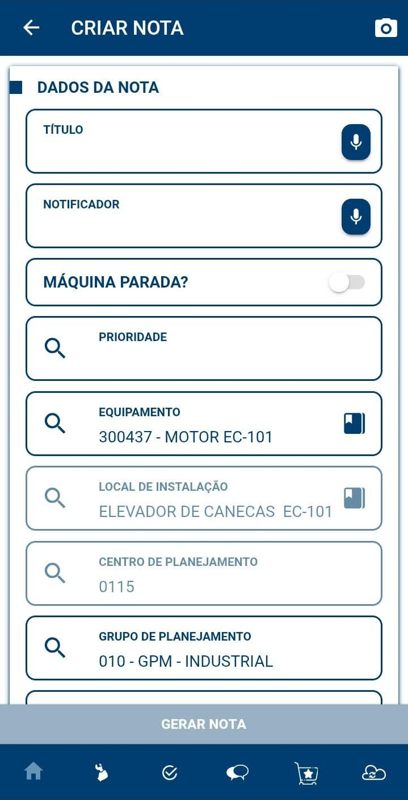
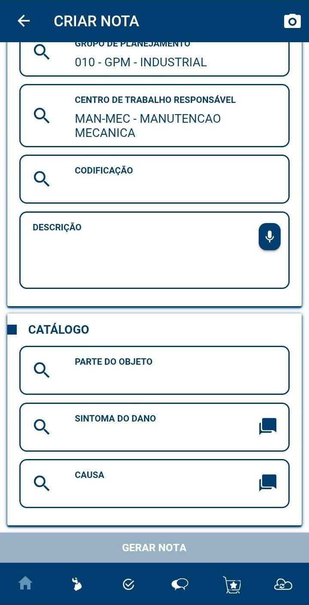

Abertura de Nota via QR Code
Guia rápido para utilização do PM Run
Dica: Utilize sempre a opção
Nota via Leitura.
O QR Code identifica automaticamente o equipamento e reduz erros de cadastro.
1
Criar Nota
Na tela inicial do PM Run selecione a opção CRIAR NOTA.

Toque na imagem para ampliar2
Nota via Leitura
Selecione NOTA VIA LEITURA para utilizar a câmera.

Toque na imagem para ampliar3
Ler QR Code
Aponte a câmera para o QR Code do equipamento. O PM Run identificará automaticamente o ativo.

Toque na imagem para ampliar4
Selecionar Tipo de Nota
- N1 - Corretiva Funcional: equipamento parado ou falha crítica.
- N2 - Corretiva Planejada: equipamento funcionando, mas apresenta defeito.
- N3 - Manutenção Autônoma: limpeza, inspeção ou ajuste.
- N5 - Apoio e Melhorias: adequações e melhorias.

Toque na imagem para ampliar5
Preencher os Campos
- Título: resumo curto da anomalia.
- Prioridade: definir conforme criticidade.
- Máquina Parada: marcar quando o equipamento estiver indisponível.
- Notificador: informar seu nome ou matrícula.

Toque na imagem para ampliar6
Descrever a Falha
Evite:
- Motor com defeito.
- Equipamento quebrado.
- Parou de funcionar.
Prefira:
- Motor EC-101 desarmando após alguns minutos de operação.
- Ruído excessivo no rolamento lado acoplamento.
- Vazamento de óleo no redutor do TC-305 próximo ao eixo de saída.
- Aquecimento anormal identificado na carcaça do motor.

Toque na imagem para ampliar📸
Quando Anexar Fotos
- Vazamentos.
- Trincas.
- Desalinhamentos.
- Cabos danificados.
- Componentes queimados.
- Peças soltas.
- Quebras mecânicas.
⚠️ Equipamento não encontrado?
1. Volte para a tela inicial do PM Run.
2. Clique em Sincronizar.
3. Aguarde a atualização.
4. Faça a leitura do QR novamente.
1. Volte para a tela inicial do PM Run.
2. Clique em Sincronizar.
3. Aguarde a atualização.
4. Faça a leitura do QR novamente.